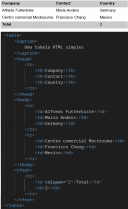
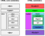

O que é HTML?
[voltar]Quando navegamos pela internet, a estrutura e a apresentação das páginas que visualizamos são orquestradas por uma linguagem fundamental: o HTML (HyperText Markup Language). Para o usuário comum, o HTML pode ser compreendido como o esqueleto digital de qualquer página web.
HTML é a linguagem de marcação padrão para criação de páginas da Web1
Em sua essência, o HTML é uma linguagem de marcação composta por um conjunto de elementos predefinidos, conhecidos como "tags". Essas tags servem como instruções para os navegadores (como Google Chrome, Mozilla Firefox, Microsoft Edge, etc.), indicando a natureza e a função de cada parte do conteúdo. Por exemplo, existem tags específicas para definir títulos, parágrafos, imagens, listas, e hiperlinks – que são os elementos clicáveis que nos levam de uma página a outra.
Ao processar um documento HTML, o navegador interpreta essas tags e as transforma na representação visual que aparece na sua tela. Sem o HTML, a web seria um amontoado desorganizado de texto e dados. Ele é o pilar que confere estrutura semântica ao conteúdo, permitindo que as informações sejam organizadas de forma lógica e acessível.
Em suma, o HTML é a base sobre a qual toda a World Wide Web é construída, definindo a estrutura e o conteúdo que torna a experiência online compreensível e interativa para bilhões de usuários diariamente.
Trabalhando com formulários em HTML
[voltar]Os formulários HTML representam o mecanismo primário pelo qual os usuários interagem e fornecem dados a aplicações web. Essencialmente, um formulário é uma coleção estruturada de elementos de entrada que possibilita a coleta de informações do lado do cliente para processamento no lado do servidor.
Um formulário HTML é usado para coletar informações do usuário. Essas informações são frequentemente enviadas a um servidor para processamento.3
Esses formulários são encapsulados pela tag <form> e integram uma variedade de controles
de interface,
tais como:
Campos de texto (<input type="text">): Para entrada de strings curtas, como
nomes
ou e-mails.
Caixas de seleção (<input type="checkbox">): Para múltiplos seleções em um
conjunto
de opções.
Botões de opção (<input type="radio">): Para seleção exclusiva dentro de um
grupo
de opções.
Áreas de texto (<textarea>): Destinadas à entrada de textos mais extensos.
Listas suspensas (<select>): Para escolha de uma opção predefinida em um menu.
Botões de submissão (<input type="submit">): Acionam o envio dos dados do
formulário ao servidor.
A funcionalidade dos formulários reside na sua capacidade de empacotar os dados inseridos pelo usuário e transmiti-los para um destino especificado (geralmente um script no servidor) para validação, armazenamento ou processamento subsequente. Dessa forma, os formulários HTML são cruciais para a dinâmica da World Wide Web, convertendo páginas estáticas em ambientes interativos que permitem a troca bidirecional de informações e a execução de funcionalidades complexas, como autenticação de usuários, realização de compras e submissão de conteúdo.
Estruturando HTML
[voltar]Uma página web pode ser vista como se fosse uma construção. Assim como uma casa precisa de uma estrutura (paredes, telhado), uma página web precisa das chamadas tags estruturais HTML. Elas têm um papel fundamental: organizar e dar sentido ao conteúdo, não só para quem visualiza, mas também para os navegadores e robôs de busca. Elas formam o esqueleto de uma página web.
Existem várias tags, cada uma com um propósito específico. Desde o 'esqueleto' principal que delimita
o
documento (<html>), passando pela 'cabeça' onde ficam informações técnicas
(<head>) e o 'corpo' onde tudo aparece (<body>).
Mas as que realmente dão forma ao conteúdo são <header> (topo),
<nav>
(navegação), <main> (conteúdo principal), <article>
(conteúdo independente), <section> (seções temáticas),
<aside> (conteúdo lateral) e <footer> (rodapé). Usá-las
corretamente ajuda a dividir a página em áreas distintas e lógicas.
A importância dessas tags vai além da organização visual. Elas trazem benefícios significativos para a
acessibilidade (ajudando leitores de tela para pessoas com deficiência visual), para a otimização para
motores
de busca (SEO), e para a manutenibilidade do código. Um código bem estruturado é muito mais fácil de
entender,
tanto para você quanto para outros desenvolvedores. Usar tags semânticas, em vez de um monte de
<div> genéricas, diz ao navegador e a outros sistemas o que cada parte da página
realmente é.
Em resumo, dominar o uso das tags estruturais e semânticas do HTML é essencial para a construção de páginas web robustas e de qualidade. Elas fornecem a base sólida necessária para que o conteúdo seja bem organizado, acessível e compreensível, garantindo uma melhor experiência para todos que acessam o seu site e facilitando a vida de quem desenvolve. É um passo crucial para criar a sua presença online.
Trabalhando com mídias
[voltar]Para construir uma página web dinâmica e interessante só texto não é suficiente. As tags HTML de mídia exercem um importante papel neste contexto. Elas são as ferramentas que nos permitem incluir imagens, sons e vídeos diretamente no conteúdo de uma página web, transformando-a de um documento estático para uma experiência muito mais rica e envolvente para quem visita.
Multimídia na web é som, música, vídeos, filmes e animações
As principais tags de mídia HTML são a tag <img> (para fotos e ilustrações); a tag
<audio> (para
músicas, podcasts ou qualquer arquivo de áudio); e a tag <video> (para incorporar
vídeos). Cada uma dessas tags tem seu papel específico e nos dá o controle básico para exibir ou reproduzir
o conteúdo que desejamos.
Para que essas tags funcionem corretamente, elas precisam de alguns "complementos" – os atributos. O mais essencial é o src, que aponta para o arquivo da mídia. Para áudio e vídeo, podemos adicionar o atributo controls para que o usuário tenha botões de play/pause, volume, etc. Já para imagens, o atributo alt (texto alternativo) é muito importante para acessibilidade e SEO, descrevendo o que a imagem representa. O HTML moderno, especialmente o HTML5, trouxe muita flexibilidade, permitindo inclusive fornecer diferentes formatos de arquivo para garantir a compatibilidade.
Em resumo, as tags de mídia são componentes fundamentais na construção de sites modernos. Elas simplificam
enormemente a tarefa de adicionar conteúdo multimídia, algo que no passado exigia plugins complicados.
Dominar o
uso de <img>, <audio> e <video> e seus atributos é
essencial para criar páginas web que não só informam, mas também cativam visual e sonoramente, tornando a
navegação mais dinâmica e agradável para todos.
Criando tabelas com HTML
[voltar]
As tabelas HTML são úteis quando é necessário exibir dados que se encaixam perfeitamente em linhas e
colunas, como uma planilha ou uma lista comparativa. Elas são o jeito padrão e mais semântico de apresentar
informações tabulares na web. É importante lembrar que tabelas HTML servem para dados tabulares, e não para
layout da página, um erro comum no passado. E tudo começa com a tag <table>.
As tabelas HTML permitem que desenvolvedores web organizem dados em linhas e colunas
Dentro dessa tag <table>, a tabela é construída linha por linha usando a tag
<tr> (de 'table row'). Cada <tr> representa uma fileira horizontal na
sua
tabela. E dentro de cada <tr>, colocamos as 'células' que contêm os dados em si. Aqui
temos
dois tipos principais de células: <td> ('table data'), que é a célula comum para o
conteúdo
geral, e <th> ('table header'), usada para os títulos das colunas ou das linhas, trazendo
mais significado semântico e ajudando, por exemplo, na acessibilidade.
Para deixar a estrutura da tabela ainda mais clara e organizada, principalmente para tabelas grandes ou
complexas, o HTML nos dá tags como <thead> (para o cabeçalho da tabela, onde geralmente
ficam
os <th>), <tbody> (para o corpo principal com os dados, contendo os
<tr> e <td>), e <tfoot> (para o rodapé, talvez com
totais ou notas). Isso não só organiza o código, mas também ajuda na acessibilidade e na manipulação via
JavaScript. Podemos ainda adicionar um título geral com a tag <caption>. E pra coisas
mais
"elaboradas", existem atributos como colspan e rowspan para mesclar células, seja horizontalmente ou
verticalmente.
No fim das contas, usar as tags <table>, <tr>, <td>
e
<th>, junto com as tags de estrutura (<thead>,
<tbody>,
<tfoot>) e atributos, é a forma correta e recomendada de apresentar dados em formato de
tabela na web. Uma tabela bem estruturada é mais acessível para leitores de tela, melhor compreendida por
motores de busca e robôs, e muito mais fácil de estilizar com CSS (afinal, o HTML cuida da estrutura, e o
CSS da
aparência). Dominar a criação de tabelas HTML é fundamental para exibir dados de forma clara e organizada no
seu
site.

Entendendo HTML semântico
[voltar]Imaginemos que uma página web não é formada apenas por diversas caixas e texto visíveis na tela, mas um documento com diferentes partes que têm significados específicos. O HTML semântico encaixa-se exatamente neste contexto: usar as tags HTML de forma que elas descrevam o tipo de conteúdo que envolvem, não apenas como ele deve parecer. É dar um "nome" para parte do site, como "cabeçalho", "menu de navegação", "artigo principal", etc.
Antigamente usava-se a tag genérica <div> para tudo, e a única forma de saber o que
ela
continha era olhando o ID ou a classe CSS. Com o HTML semântico (muito impulsionado pelo HTML5), ganhamos
tags
que já carregam um significado. Por exemplo, em vez de <div class="header">, usamos
<header>. Para o menu, <nav> em vez de
<div class="menu">. Temos <article> para um conteúdo independente
(como um
post de blog), <aside> para conteúdo relacionado mas não central (como uma sidebar), e
<footer> para o rodapé.

Essas tags semânticas não só tornam o código mais legível e organizado, mas também ajudam os navegadores e ferramentas de acessibilidade a entenderem melhor a estrutura de um site. Por exemplo, um leitor de tela pode identificar rapidamente onde está o cabeçalho, o conteúdo principal e o rodapé, facilitando a navegação para pessoas com deficiência visual.
A importância do HTML semântico vai muito além de deixar o código mais organizado para quem está desenvolvendo. O uso de tags semânticas melhora a acessibilidade, pois leitores de tela (usados por pessoas com deficiência visual) conseguem navegar pela estrutura da página de forma muito mais eficiente, identificando as diferentes seções. Também é ótimo para o SEO (otimização para motores de busca), já que robôs de busca entendem melhor a hierarquia e o conteúdo principal das páginas web.
Em suma, adotar o HTML semântico é uma prática fundamental no desenvolvimento web moderno. É construir a web de forma mais inteligente e inclusiva. Usar a tag correta para o propósito correto garante que uma página não seja apenas visualmente atraente, mas também compreensível por máquinas e acessível para pessoas, solidificando a estrutura e o significado do seu conteúdo na vasta rede mundial de computadores. É um passo simples com um impacto gigante na qualidade do frontend.
Lista de referências
[voltar]- HTML Introduction - W3C Schools
-
O Que é HTML5 E Como Funciona? - Aprenda HTML Em 60 Minutos!
- HTML Forms - W3C Schools
- Como estruturar um formulário HTML - MDN Web Docs
- HTML5 - Conteúdo incorporado e multimídia - Dev Community
-
HTML - Tags Multimídia
- Entenda o que é uma tabela em HTML e como criar com exemplos práticos - Hashtag
- HTML Semântico: Conheça os elementos semânticos da HTML5 - Devmedia